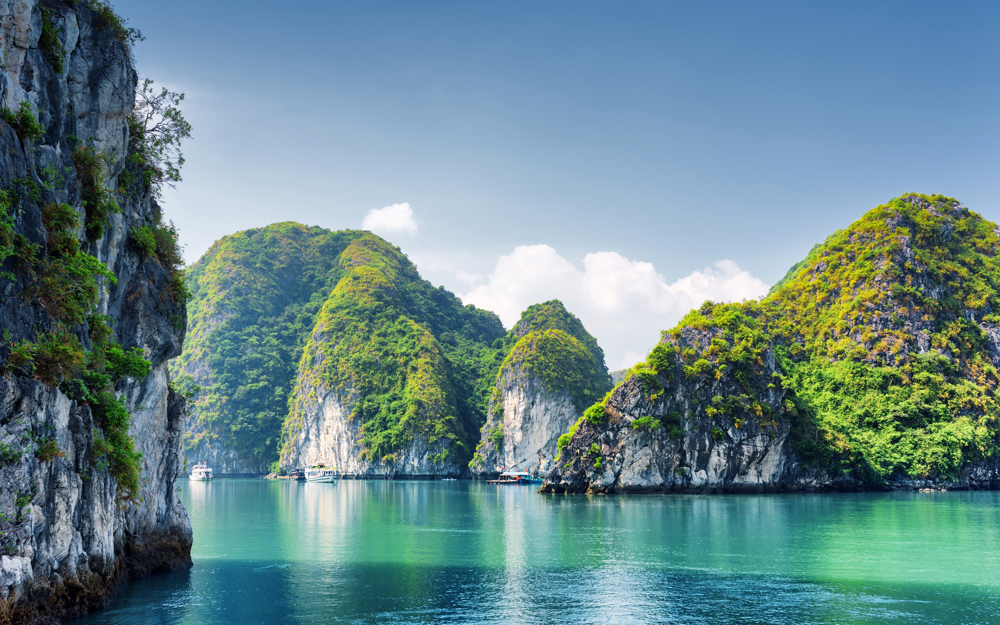
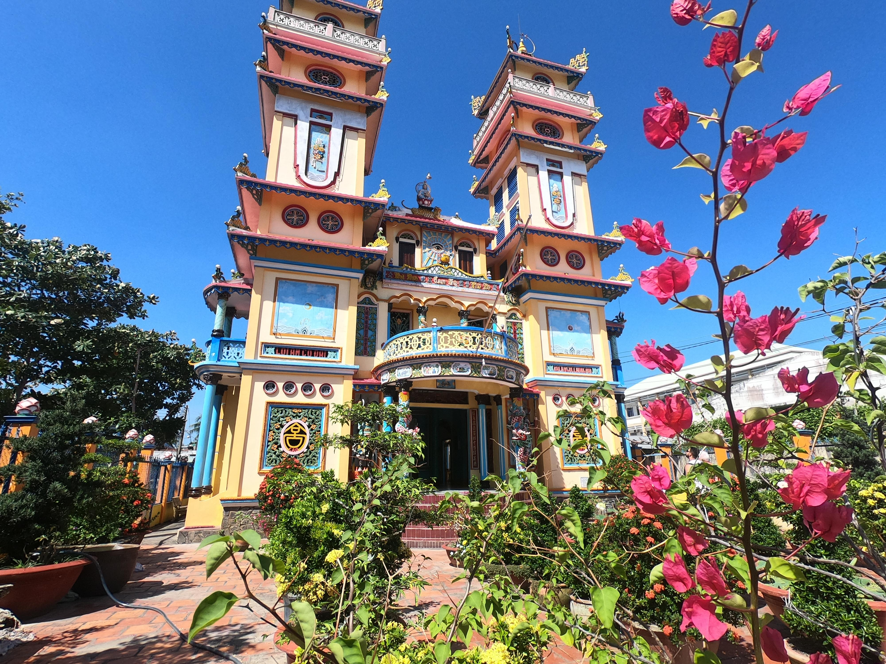
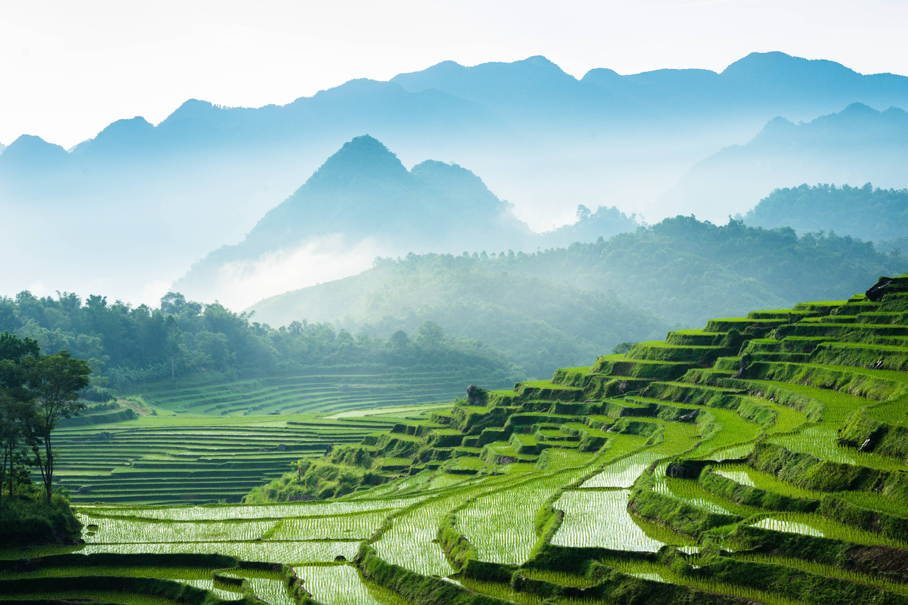
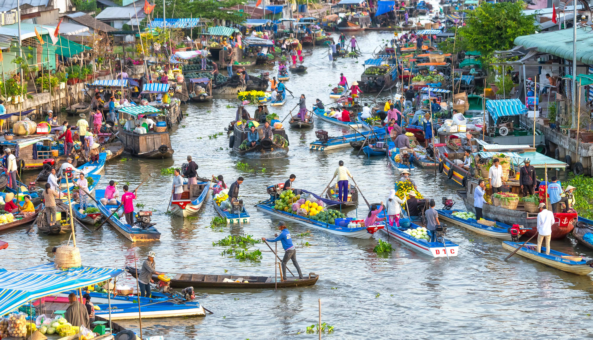
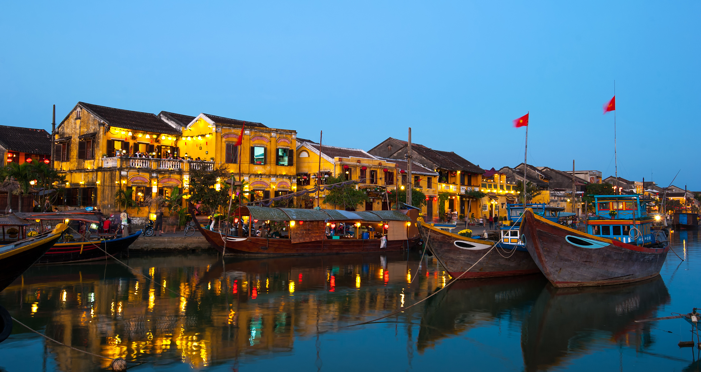
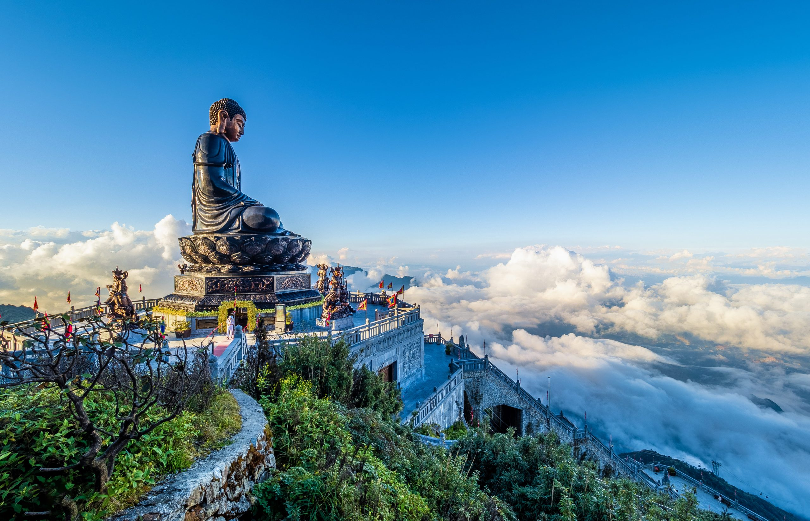
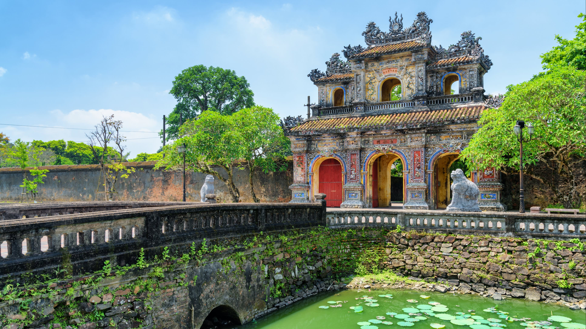
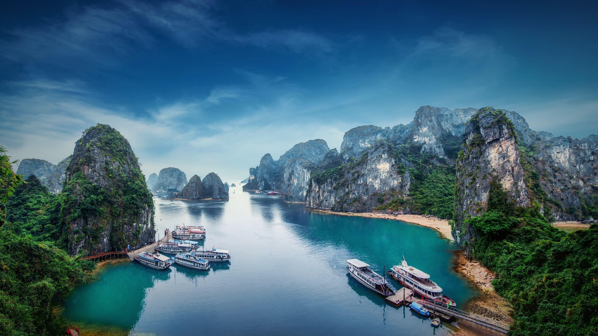

Highlights
Popular Destinations









Vietnam reveals itself through motion, color, and life unfolding in every direction. Rivers wind through emerald rice fields, lanterns glow above ancient streets, and the scent of lemongrass drifts from open kitchens. The pace shifts gently between calm and chaos, where quiet temples stand not far from buzzing markets.
Picture morning mist rising over terraced hills, the call of vendors on bicycles, and the rhythm of boats gliding across the Mekong. The air hums with energy and warmth, and each encounter feels genuine and alive. From mountain villages to coastal towns, tradition and progress weave together with effortless beauty.
Life in this land feels fluid and vibrant, shaped by water, earth, and the pulse of its people. Rivers wind through fertile plains, ancient temples rest beneath the shade of banyan trees, and the air hums with a blend of incense, music, and laughter.
Along the curve of its rivers and the rise of its mountains, Vietnam reveals itself through movement and texture. The hum of scooters, the sizzle of street-side woks, and the laughter that drifts from open windows form a living soundtrack to daily life.
Its essence lives in the harmony between people and place, where every gesture seems connected to something deeper. You might see fishermen casting nets at dawn, artisans shaping lacquer by hand, or families gathered around bowls of soup rich with history.
Wander through bustling markets, riverside stalls, and small village workshops where Vietnam's artistry thrives. Browse handwoven silk, lacquerware, conical hats, bamboo baskets, and ceramics painted with remarkable precision.
Explore Vietnam's rich culinary identity through dishes that awaken every sense. Fragrant bowls of pho, crisp banh xeo, grilled river fish, and fresh herbs tell stories of the land and the people who cultivate it.
Pause for a traditional cup of Vietnamese coffee, thick and sweet, dripping slowly into condensed milk, or sip warm lotus tea in a shaded courtyard. Every region offers its own taste.
Travel across Vietnam feels like moving through a living canvas painted in color and motion. Roads wind past rice terraces that shimmer in the sun, while rivers, trains, and flights link the country's highlands, deltas, and coastlines.
Getting around Vietnam's cities is an adventure filled with sound, color, and rhythm. Motorbikes weave through busy streets, while cyclos and walking tours uncover narrow lanes, colonial architecture, and bustling markets.
Beyond the urban energy, Vietnam's countryside offers endless possibilities for discovery. Mountain paths wind through mist-covered valleys, rivers snake between limestone cliffs, and fishing boats dot the quiet bays.
Vietnam follows Indochina Time (ICT), which is GMT+7, and does not observe daylight saving time.
Ride-sharing services like Grab operate in most major cities and are an easy, affordable way to get around. In smaller towns, motorbike taxis and cyclos offer a more local and personal way to explore.
Vietnam uses 220V electricity with a frequency of 50Hz. Plug types A, C, and D are the most common, so travelers may need an adapter.
Vietnam's climate varies widely from north to south. The north experiences cool, dry winters and warm, humid summers, while the central coast sees tropical heat and seasonal rains. In the south, the climate stays warm year-round.
Vietnam's breathtaking landscapes and vibrant streets have appeared in films such as Indochine, The Quiet American, and Kong: Skull Island. The nation has produced many celebrated talents, including director Tran Anh Hung and model-actress Ngo Thanh Van.
Emergency Services: 113
Police: 113
Medical Emergency: 115
Fire Brigade: 114
Country Code: +84







